Solana Bay lives: traffic keeps to its lanes, people cross at the zebras, and every crime puts a star on your HUD and another black-and-white on your tail. The payphones have eight jobs, from WHEELS for $500 to THE BIG ONE for $5000. Written from scratch in 65816 assembly, in flat 16-colour pixel art on the Super Hi-Res screen.
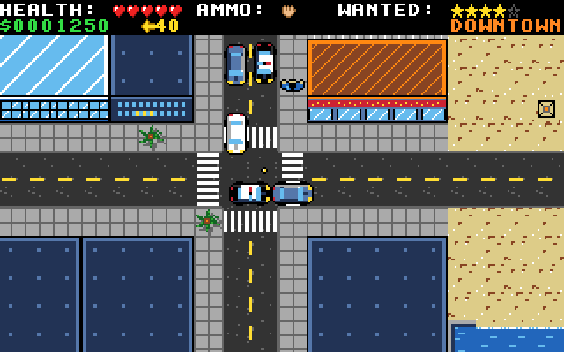
The whole game plays, from the title to the ending: the city, the police, the eight jobs and the save game. It has yet to be tried on a real IIgs, and there's no download yet.
You walk or run in eight directions and drive anything you can get into. Traffic and people turn up just out of view around you, and the view runs ahead of your car the way it's going.
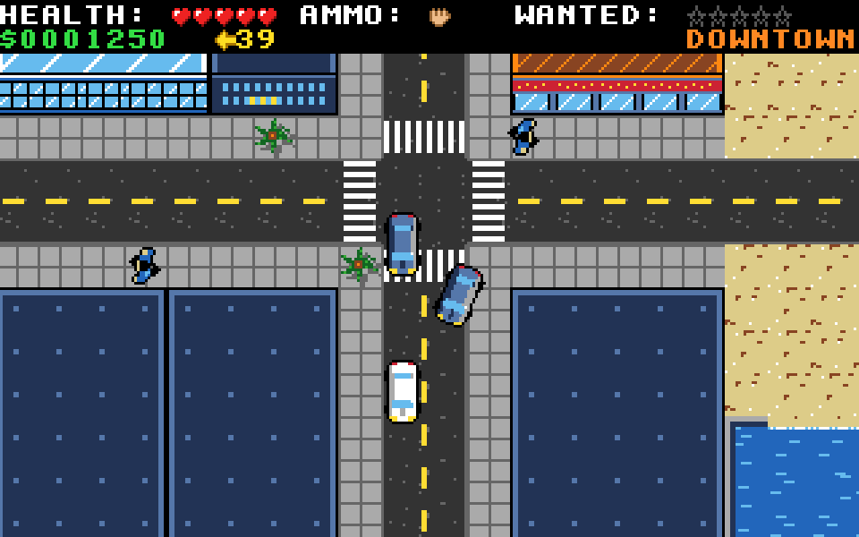
Forty cars are parked by the curb and in car parks. Walk up to one and press Return. Or stand in the traffic's way: a car stops, Return pulls the driver out, and it's yours.
Cars speed up, brake, back up and coast, and steer more sharply the faster they go. Hit something hard and your car takes damage. It smokes grey, then black, and a wreck burns for three seconds before it goes up.
Jacking a car makes you wanted, and knocking someone down adds a star, up to five. For each star a black-and-white comes in from out of view, ignoring the lanes and taking whichever road brings it closer. From three stars they ram you and shoot.
Caught on foot, or boxed in while you sit still, you're busted: a $500 fine. Keep every police car out of reach for ten seconds and a star goes. Or drive into one of the three spray shops for new paint and no stars at all.
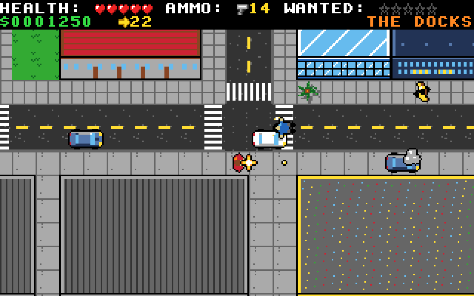
Control punches or shoots, and Tab switches between your fists and the pistol. The gun shops sell the pistol and 12 rounds for $500. A shot knocks people down, though they get up again, and enough shots wreck a car.
Get hurt and you lose hearts. With none left you're out cold and wake up at SOLANA GENERAL with a $1000 bill. Press Return at its doors and $200 buys all your hearts back.
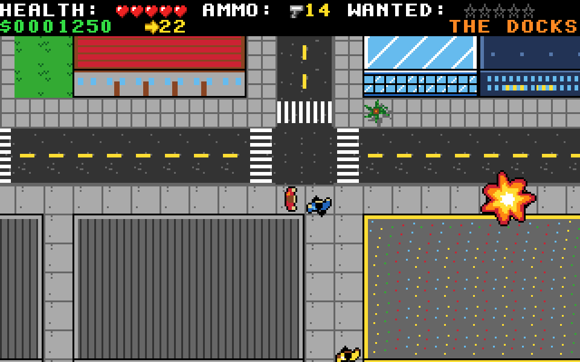
The engine hums higher the faster you go, and the siren wails while the police are after you. There's a horn on H, a cartoon boing when someone's knocked down and a bleep for every new star. Payphones ring when a job's waiting, a ka-ching pays you, and a jingle tells you you're busted.
Answering a payphone saves the game to the disk, and C on the title screen carries on from it.
256 by 192 tiles, about 13 by 17 screens, made up for this game. The HUD always names the district you're in.
The west coast: sand, palms and beach umbrellas along the coast road.
Houses with lawns and pools in the north, and a pickup for THE DROP.
Glass towers, plazas, the hospital and a gun shop. You start here.
Basins, cranes, containers and warehouses along the south coast.
Pumpjacks on the dirt of the north-east, and not much else.
Across the bay in the south-east, reached by the Solana Bridge.
The white building with a big blue H on its roof, just west of the start.
Downtown and at the docks, each with a target on the roof. 12 more rounds cost $100.
Downtown, the docks and the beach. Drive in at the hazard door.
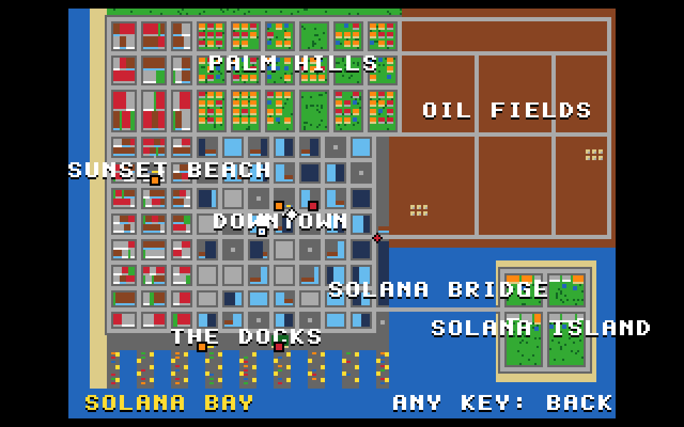
The map shows Solana Bay with your blinking mark, and everything you might be looking for. On the HUD, an arrow and a distance in tiles point the way.
There are payphones downtown, at Sunset Beach and at the docks. Press Return at one and the HUD tells you what to do, while its arrow points the way. Some jobs run against a clock. Get busted or run out of time and the job waits at the payphones for another go.
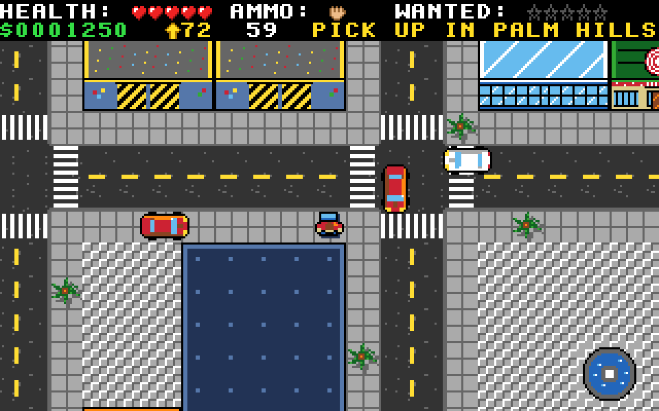
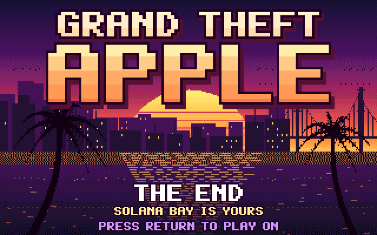
320 by 200 pixels in 16 colours, as the Super Hi-Res screen shows them. Click one to see it bigger.
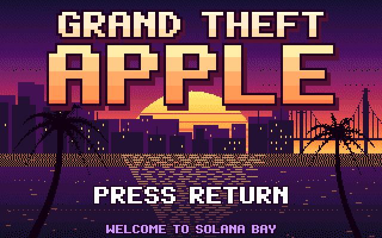
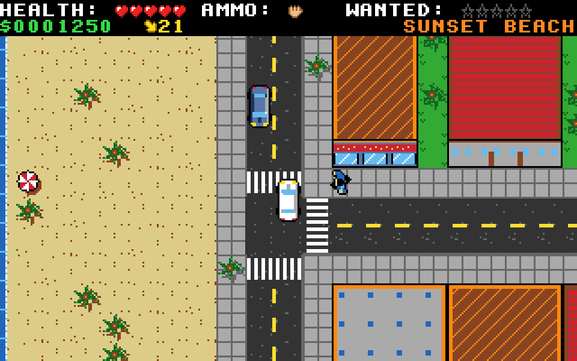
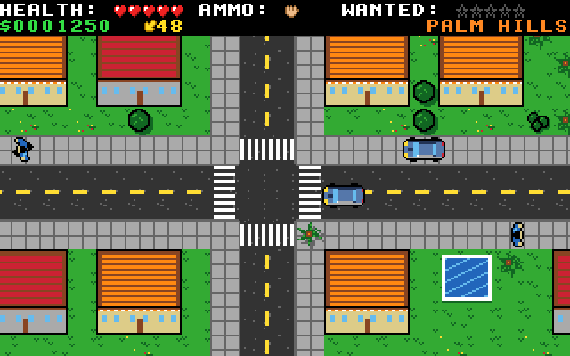
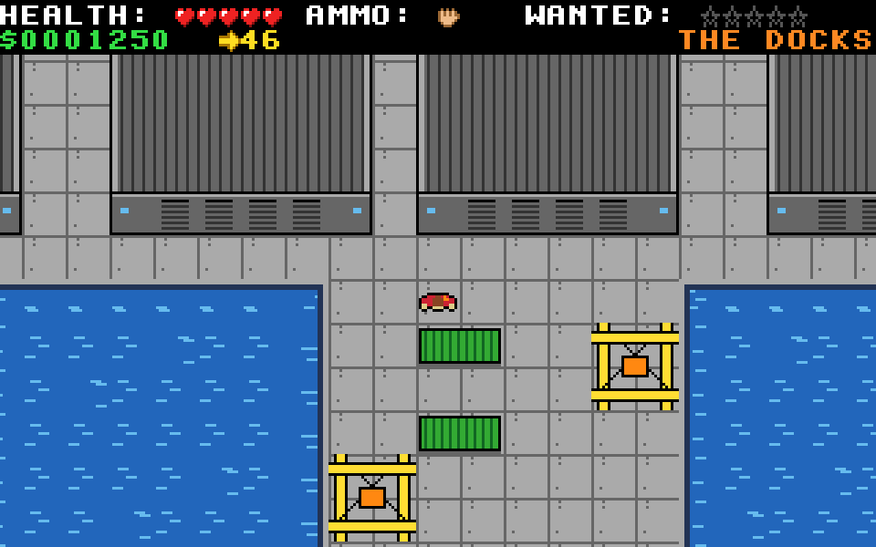
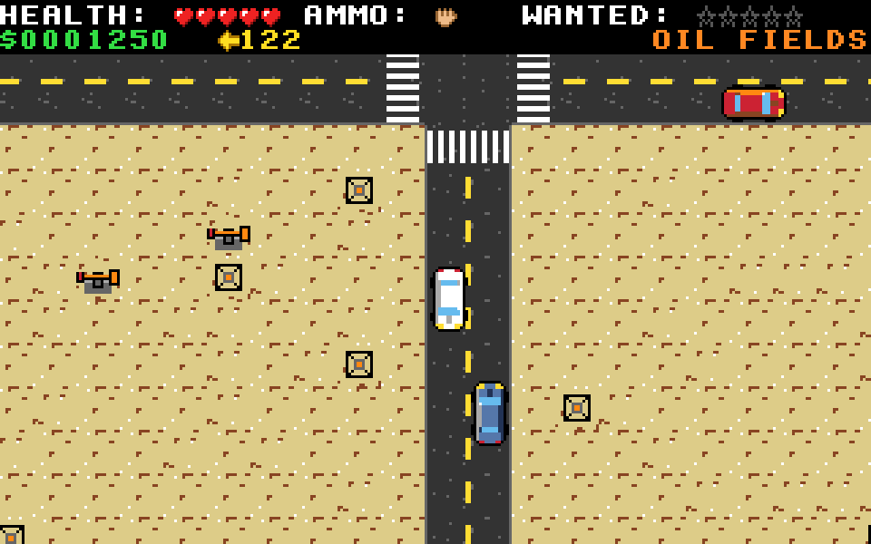
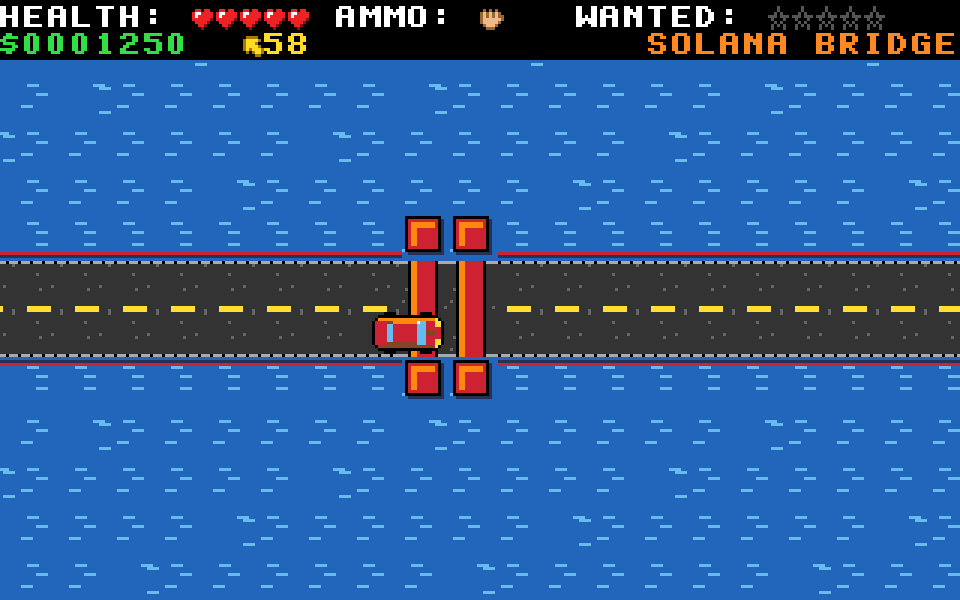
Each car is tuned to one of the stations, and R switches to the next one or turns the radio off. The tunes here are rendered by the game's build tools the way the IIgs's sound chip plays them.
C major at sunset, 120 beats a minute with a lilt. It settles on A minor, the lead answers itself, and a bridge falls from F.
E minor, four on the floor, with the bass bouncing in octaves and open hats on the off-beats. A sunny verse, then a chorus that lifts to A minor.
D minor after dark, slow and loose: a sparse bass, a late snare, and a soft lead over a two-chord vamp.
All the music and sounds are synthesized by the game's own Python tools and played by the Ensoniq chip. Nothing is sampled.
The Apple keyboard reports one key at a time, so speeding up while you steer has keys of its own.
| ←↑→↓ or WASD | Walk |
| QEZC | Walk diagonally |
| Shift or button 1 | Run |
| Return Space or button 0 | Take a car, a job at a payphone, the pistol at a gun shop's door, your hearts at the hospital |
| Control, or hold button 0 | Punch, or shoot with the pistol in hand |
| Tab | Fists or the pistol |
| ↑ W / ↓ S | Speed up / brake, then back up |
| ← A / → D | Steer |
| Q E / Z C | Speed up / back up while steering |
| Button 1 | Brake |
| Return Space or button 0 | Get out, once nearly stopped |
| H / R | The horn / the next station |
Anywhere, M shows the map. Esc asks QUIT? Y OR N, and on the title it quits at once.
A new game, written from the ground up for the IIgs.